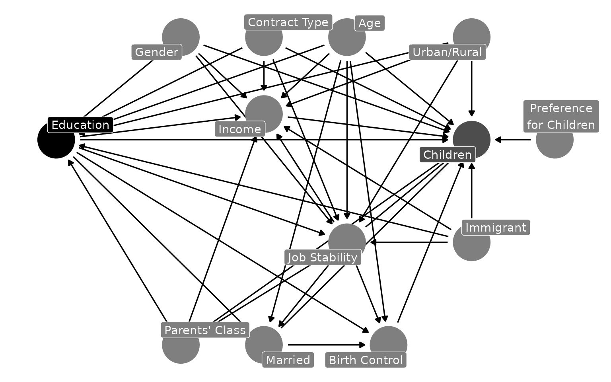

The backdoor criteria dictate that […]. Upon fitting controls to
close backdoors, many researchers interpret the treatment coefficient as
the average treatment effect (ATE). However, for
observational regressions with controls, linear regression and
generalized linear model methods do not recover average treatment
effects by default. Instead, they recover weighted strata-specific
averages (Chattopadhyay and Zubizarreta 2024). To remedy this
discrepancy, DAGassist automates estimand recovery via
weights. This vignette uses a simulated dataset to provide an applied
example of this functionality.
Dataset summary statistics (click to expand)
| variable | type | Min | Q1 | Median | Mean | Q3 | Max |
|---|---|---|---|---|---|---|---|
| id | integer | 1.00 | 250.75 | 500.50 | 500.50 | 750.25 | 1000.00 |
| year | integer | 0.00 | 1.00 | 2.00 | 2.00 | 3.00 | 4.00 |
| age | numeric | 0.00 | 27.60 | 37.70 | 37.76 | 47.40 | 86.20 |
| edu_year | numeric | 0.00 | 11.80 | 13.10 | 13.07 | 15.20 | 22.00 |
| married | integer | 0.00 | 0.00 | 1.00 | 0.54 | 1.00 | 1.00 |
| birth_control | integer | 0.00 | 0.00 | 1.00 | 0.69 | 1.00 | 1.00 |
| income | numeric | 2277.00 | 33552.50 | 62842.00 | 80974.87 | 107020.75 | 784812.00 |
| children | numeric | 0.00 | 0.00 | 1.00 | 1.96 | 2.00 | 12.00 |
| variable | type | top_levels |
|---|---|---|
| gender | factor | Male:2565 Female:2435 |
| immigrant | factor | No:4380 Yes:620 |
| urban | factor | Urban:3560 Rural:1440 |
| class | ordered | Working:2080 Middle:1580 Low:885 (Other):455 |
| religion | factor | Christian:1965 Unaffiliated:1665 Muslim:450 (Other):920 |
| edu_degree | factor | HS_grad:1635 Some_college:1390 BA:950 (Other):1025 |
Example: The Causal Effects of Family Background and Life Course Events on Fertility Patterns

The DAG above visualizes a common social science question: how does
education affect fertility (Morgan and Winship, 17-19)? The DAG model
encodes a plausible, but not exhaustive, set of covariates. In the
report below, DAGassist classifies variables by their
causal roles, reestimates the model with DAG-consistent adjustment sets,
and recovers the ATE using weights.
Note: estimand recovery for binary treatments requires
WeightIt, and continuous treatments require
twangContinuous. The below model has years of education as
its treatment and therefore uses twangContinuous (see
descriptive statistics for details on covariates).
Roles
| Variable | Role | Exp. | Out. | CON |
MED |
COL |
dOut |
dMed |
dCol |
dConfOn | dConfOff | NCT |
NCO |
|---|---|---|---|---|---|---|---|---|---|---|---|---|---|
| age | confounder | x | |||||||||||
| birth_control | mediator | x | x | ||||||||||
| children | outcome | x | |||||||||||
| class | confounder | x | |||||||||||
| edu_year | exposure | x | |||||||||||
| gender | confounder | x | |||||||||||
| immigrant | confounder | x | |||||||||||
| income | mediator | x | |||||||||||
| married | mediator | x | x | ||||||||||
| religion | mediator | x | |||||||||||
| urban | confounder | x |
Models
| Term | Original | Original (ATE) | Minimal 1 | Minimal 1 (ATE) | Canonical | Canonical (ATE) |
|---|---|---|---|---|---|---|
| edu_year | -0.047*** | -0.115*** | -0.054*** | -0.124*** | -0.054*** | -0.124*** |
| (0.013) | (0.011) | (0.013) | (0.010) | (0.013) | (0.010) | |
| age | 0.066*** | 0.058*** | 0.079*** | 0.072*** | 0.079*** | 0.072*** |
| (0.004) | (0.004) | (0.003) | (0.003) | (0.003) | (0.003) | |
| genderMale | -0.046 | 0.092 | -0.037 | 0.058 | -0.037 | 0.058 |
| (0.083) | (0.080) | (0.082) | (0.079) | (0.082) | (0.079) | |
| immigrantYes | 0.121 | 0.640*** | 0.098 | 0.631*** | 0.098 | 0.631*** |
| (0.124) | (0.128) | (0.124) | (0.128) | (0.124) | (0.128) | |
| urbanUrban | -0.128 | -0.614*** | -0.136 | -0.481*** | -0.136 | -0.481*** |
| (0.091) | (0.088) | (0.091) | (0.086) | (0.091) | (0.086) | |
| birth_control | -0.103 | -0.263** | ||||
| (0.095) | (0.095) | |||||
| income | 0.000* | 0.000*** | ||||
| (0.000) | (0.000) | |||||
| married | 0.456*** | 0.345*** | ||||
| (0.117) | (0.101) | |||||
| religionMuslim | 0.059 | 0.061 | ||||
| (0.151) | (0.162) | |||||
| religionHindu | -0.611** | -1.040*** | ||||
| (0.222) | (0.171) | |||||
| religionBuddhist | 0.230 | -0.026 | ||||
| (0.222) | (0.203) | |||||
| religionJewish | 0.130 | 0.147 | ||||
| (0.215) | (0.234) | |||||
| religionUnaffiliated | -0.468*** | -0.134 | ||||
| (0.096) | (0.091) | |||||
| religionOther | -0.350* | -0.349+ | ||||
| (0.167) | (0.186) | |||||
| Num.Obs. | 5000 | 5000 | 5000 | 5000 | 5000 | 5000 |
| R2 | 0.153 | 0.153 | 0.142 | 0.140 | 0.142 | 0.140 |
Notes
- Roles legend: X (exposure); Y (outcome); CON (confounder); MED (mediator); COL (collider); dOut (proper descendant of Y); dMed (proper descendant of any mediator); dCol (proper descendant of any collider); dConfOn (descendant of a confounder on a back-door path); dConfOff (descendant of a confounder off a back-door path); NCT (neutral control on treatment); NCO (neutral control on outcome).
- p-value legend: + < 0.1, * < 0.05, ** < 0.01, *** < 0.001.
- Controls (minimal): {age, class, gender, immigrant, urban}.
- Controls (canonical): {age, class, gender, immigrant, urban}.